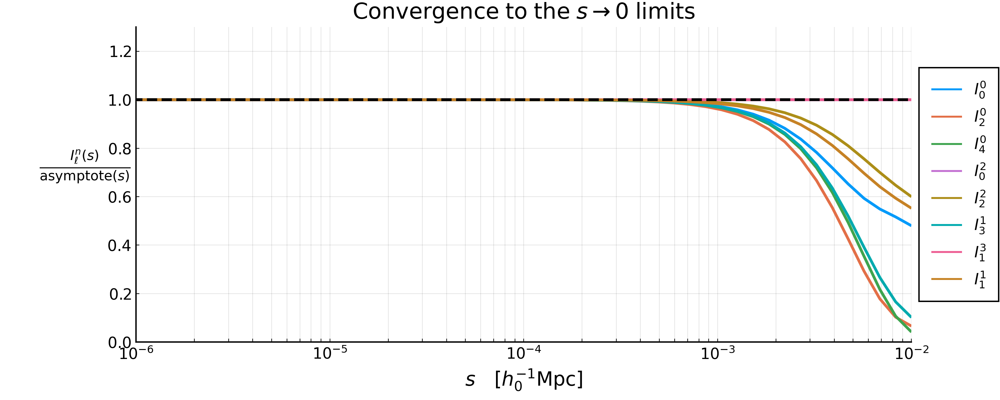
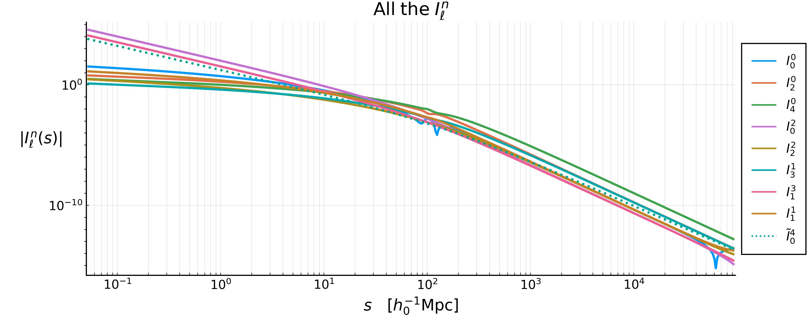
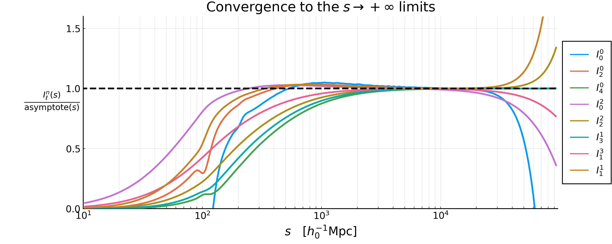

The $I_\ell^n$ integrals
- The $I_\ell^n$ integrals
Every Two-Point Correlation Function (TPCF) that GaPSE computes is, in the end, a sum of terms of the form $J(\chi, s, y) \, I_\ell^n(\Delta\chi)$. This page collects the definition of these $I_\ell^n$, proves their behaviour for small separations, and shows what they look like.
The plots are produced by the script theory/Iln_terms.jl (or, equivalently, by the notebook theory/Iln_terms.ipynb); see the end of this page.
Definitions
The integrals are
\[ I_\ell^n(s) := \int_0^{+\infty} \frac{\mathrm{d}q}{2\pi^2} \, q^2 \, P(q) \, \frac{j_\ell(qs)}{(qs)^n} \;, \quad \quad (1)\]
with $P(q)$ the matter Power Spectrum at $z=0$ stored inside the Cosmology, and $j_\ell$ the spherical Bessel function of order $\ell$. The eight combinations $(\ell, n)$ that appear in the code are
\[ (0,0) \, , \quad (2,0) \, , \quad (4,0) \, , \quad (0,2) \, , \quad (2,2) \, , \quad (3,1) \, , \quad (1,3) \, , \quad (1,1) \; ,\]
and they are stored in IPSTools as I00, I20, I40, I02, I22, I31, I13 and I11 respectively, i.e. the name is I followed by $\ell$ and then $n$. Alongside them there is the auxiliary integral
\[\begin{align*} \tilde{I}_0^4(s) &:= \int_0^{+\infty} \frac{\mathrm{d}q}{2\pi^2} \, q^2 \, P(q) \, \frac{j_0(qs) - 1 }{(qs)^4} \quad \quad (2) \\[10pt] &= \frac{1}{s^4} \int_0^{+\infty} \frac{\mathrm{d}q}{2\pi^2} \, \frac{P(q)}{q^2} \, \left[ j_0(qs) - 1 \right] \; . \end{align*}\]
stored in IPSTools as I04_tilde and computed by GaPSE.func_I04_tilde.
We also need the moments of the Power Spectrum
\[ \sigma_i := \int_{k_\mathrm{min}}^{k_\mathrm{max}} \frac{\mathrm{d}q}{2 \pi^2} \, q^{2-i} \, P(q) \; , \quad \quad (3)\]
of which IPSTools stores $\sigma_0$, $\sigma_1$, $\sigma_2$, $\sigma_3$ and $\sigma_4$. Note that $\sigma_i$ with $i<0$ also appear below; they are perfectly finite as long as $k_\mathrm{max}$ is finite, but they are not stored, so the script recomputes them when needed.
TLDR; the easy-to-get small-$s$ behaviour
\[\begin{align*} j_\ell(x) \mathrm{ \; series \; expansion \; near \; 0}&: \quad \quad j_\ell(x) = x^\ell \left( \frac{\sqrt{\pi}}{2^{\ell+1}\, \Gamma(\ell + 3/2)} + O(x^2) \right) \quad \quad \mathrm{(1.1)}\\[10pt] \Rightarrow j_\ell(x) \; &\underset{x \rightarrow 0}{\sim} x^{\ell} \quad \quad \mathrm{(1.2)} \end{align*}\]
So:
\[\begin{align*} (1): \quad \quad I_\ell^n(s) &:= \int_0^{+\infty} \frac{\mathrm{d}q}{2\pi^2} \, q^2 \, P(q) \, \frac{j_\ell(qs)}{(qs)^n} \\[10pt] \mathrm{inserting\; (1.2) } \; \rightarrow \;\; \quad &\underset{s \rightarrow 0}{\sim} \int_0^{+\infty} \frac{\mathrm{d}q}{2\pi^2} \, q^2 \, P(q) \, \frac{(qs)^{\ell}}{(qs)^n}\\[10pt] &= s^{\ell-n}\int_0^{+\infty} \frac{\mathrm{d}q}{2\pi^2} \, q^{2-(n-\ell)} \, P(q) \, \\[10pt] &= \sigma_{n-\ell} \; s^{\ell-n}\\[10pt] &\underset{s \rightarrow 0}{\sim} s^{\ell-n} \end{align*}\]
The exact small-$s$ behaviour
\[\boxed{ I_\ell^n(s) \; \underset{s \rightarrow 0}{\sim} \; \frac{\sigma_{n-\ell}}{(2\ell+1)!!} \, s^{\,\ell - n} } \quad \quad (4a) \qquad\qquad \boxed{ \tilde{I}_0^4(s) \; \underset{s \rightarrow 0}{\sim} \; - \frac{\sigma_2}{6 \, s^2} } \quad \quad (4b)\]
Proof.
Acronym used for the sources:
- DLMF = Digital Library of Mathematical Functions
- NIST = National Institute of Standards and Technology
The Taylor series of the spherical Bessel function $j_\ell(x)$ of order $\ell$ is the following everywhere-convergent expansion (source: U.S. NIST DLMF, Spherical Bessel Functions - Power Series, Section 10.53 ):
\[ j_\ell(x) = \sum_{k=0}^{+\infty} \frac{(-1)^k \, x^{\ell + 2k}}{2^k \, k! \, (2\ell + 2k + 1)!!} \; \quad \quad (2.1)\\[10pt] \quad n!! := \begin{cases} 2 \cdot 4 \cdot 6 \cdot ... \cdot n & n \mathrm{\; is \; even} \\ 1 \cdot 3 \cdot 5 \cdot ... \cdot n & n \mathrm{\; is \; odd} \\ 1 & n=0,-1 \end{cases} \]
We can set $x = qs$ and divide both terms by $(qs)^n$:
\[ x:=qs \; \Rightarrow \; \frac{(2.1)}{(qs)^n} : \quad \quad \frac{j_\ell(qs)}{(qs)^n} = \sum_{k=0}^{+\infty} \frac{(-1)^k \, (qs)^{\ell + 2k - n}} {2^k \, k! \, (2\ell + 2k + 1)!!} \; . \quad \quad (2.2)\]
We then insert this last Eq.(2.2) into the definition of $I_\ell^n$ integrals Eq.(1), we bring the sum outside the integral (which is legitimate because the series converges uniformly on the compact integration range $[k_\mathrm{min}, k_\mathrm{max}]$) and we insert the definition of $\sigma_i$ Eq.(3):
\[\begin{align*} (1): \quad \quad I_\ell^n(s) &:= \int_0^{+\infty} \frac{\mathrm{d}q}{2\pi^2} \, q^2 \, P(q) \, \frac{j_\ell(qs)}{(qs)^n} \\[10pt] \mathrm{inserting\; } (2.2) \; \rightarrow \;\; \quad &= \int_0^{+\infty} \frac{\mathrm{d}q}{2\pi^2} \, q^2 \, P(q) \, \sum_{k=0}^{+\infty} \frac{(-1)^k \, (qs)^{\ell + 2k - n}} {2^k \, k! \, (2\ell + 2k + 1)!!} \\[10pt] &= \sum_{k=0}^{+\infty} \frac{(-1)^k \; s^{\ell + 2k - n}} {2^k \, k! \, (2\ell + 2k + 1)!!} \int \frac{\mathrm{d}q}{2\pi^2} \, q^{\,2 - (n - \ell - 2k)} \, P(q) \; \\[10pt] \mathrm{inserting\; } (3) \; \rightarrow \;\; \quad &= \sum_{k=0}^{+\infty} \frac{(-1)^k \; \sigma_{n - \ell - 2k}} {2^k \, k! \, (2\ell + 2k + 1)!!} \; s^{\,\ell + 2k - n} \; . \quad \quad (2.3) \end{align*}\]
Every term carries two more powers of $s$ than the previous one, so for $s \rightarrow 0$ the $k=0$ term dominates, which is the claimed result:
\[\begin{align*} (2.3):\quad\quad I_\ell^n(s) &= \sum_{k=0}^{+\infty} \frac{(-1)^k \; \sigma_{n - \ell - 2k}} {2^k \, k! \, (2\ell + 2k + 1)!!} \; s^{\,\ell + 2k - n} \\[10pt] &= s^{\,\ell - n} \left[ \frac{\sigma_{n-\ell}}{(2\ell+1)!!} + \sum_{k=1}^{+\infty} \frac{(-1)^k \; \sigma_{n - \ell - 2k}} {2^k \, k! \, (2\ell + 2k + 1)!!} \; s^{2k}\right]\\[10pt] &= \frac{\sigma_{n-\ell}}{(2\ell+1)!!} s^{\,\ell - n} \left[1 + \alpha_1 s^2 + \alpha_2 s^4 + ...\right]\\[10pt] &\underset{s \rightarrow 0}{\sim} \frac{\sigma_{n-\ell}}{(2\ell+1)!!} s^{\,\ell - n} \; . \quad\quad (2.4) \end{align*}\]
For $\tilde{I}_0^4$ the same argument applies to $j_0(x) - 1$, whose series starts at $k=1$:
\[\begin{align*} (2.1) \mathrm{\;with\;}\ell=0 : \quad \quad j_0(x) &= \sum_{k=0}^{+\infty} \frac{(-1)^k \, x^{2k}}{2^k \, k! \, (2k + 1)!!}\; \\[10pt] &= 1+\sum_{k=1}^{+\infty} \frac{(-1)^k \, x^{2k}}{2^k \, k! \, (2k + 1)!!} \\[10pt] 2^k \, k! \, (2k+1)!! = (2k+1)! \; \rightarrow \quad \quad &= 1+\sum_{k=1}^{+\infty} \frac{(-1)^k \, x^{2k}}{(2k+1)!} \end{align*}\]
\[\Rightarrow \quad \quad j_0(x) -1 = \sum_{k=1}^{+\infty} \frac{(-1)^k \, x^{2k}}{(2k+1)!} \quad \quad (2.5)\]
Then
\[\begin{align*} (2): \quad \quad \tilde{I}_0^4(s) &= \frac{1}{s^4} \int_0^{+\infty} \frac{\mathrm{d}q}{2\pi^2} \, \frac{P(q)}{q^2} \, \left[ j_0(qs) - 1 \right] \; \\[10pt] \mathrm{inserting\; } (2.6) \; \rightarrow \;\; \quad &= \frac{1}{s^4} \int_0^{+\infty} \frac{\mathrm{d}q}{2\pi^2} \, \frac{P(q)}{q^2} \sum_{k=1}^{+\infty} \frac{(-1)^k \, (qs)^{2k}}{(2k+1)!}\\[10pt] &= \frac{1}{s^4} \sum_{k=1}^{+\infty} \frac{(-1)^k \, s^{2k}}{(2k+1)!} \int_0^{+\infty} \frac{\mathrm{d}q}{2\pi^2} \, q^{\,2k-2} \, P(q)\\[10pt] &= \sum_{k=1}^{+\infty} \frac{(-1)^k}{(2k+1)!}s^{2k-4} \int_0^{+\infty} \frac{\mathrm{d}q}{2\pi^2} \, q^{2-(4-2k)} \, P(q)\\[10pt] \mathrm{inserting\; } (3) \; \rightarrow \;\; \quad &=\sum_{k=1}^{+\infty} \frac{(-1)^k \, \sigma_{4-2k}}{(2k+1)!} \, s^{\,2k-4} \; , \quad\quad (2.7) \end{align*} \]
And analogously, every term carries two more powers of $s$ than the previous one, so for $s \rightarrow 0$ the $k=1$ term dominates, which is again the claimed result:
\[\begin{align*} (2.7):\quad\quad \tilde{I}_0^4(s) &= \sum_{k=1}^{+\infty} \frac{(-1)^k \, \sigma_{4-2k}}{(2k+1)!} \, s^{\,2k-4} \\[10pt] &= s^{-2} \left[ \sum_{k=1}^{+\infty} \frac{(-1)^k \; \sigma_{4 - 2k}} {(2k + 1)!} \; s^{2k-2}\right]\\[10pt] &= s^{-2} \left[ - \frac{\sigma_{2}}{3!} + \frac{\sigma_0}{5!}s^2 - \frac{\sigma_{-2}}{7!}s^4 +... \right]\\[10pt] &= - \frac{\sigma_{2}}{6} s^{-2} + \frac{\sigma_0}{120} - \frac{\sigma_{-2}}{5040} s^2 + ... \\[10pt] &\underset{s \rightarrow 0}{\sim} - \frac{\sigma_{2}}{6\,s^2} \; . \quad\quad (2.8) \end{align*}\]
The three regimes
The sign of $\ell - n$ decides everything:
\[I_\ell^n \xrightarrow[s \rightarrow 0]{} \begin{cases} \propto s^{\ell-n} \rightarrow 0 & \ell > n \\[10pt] \frac{\sigma_0}{(2\ell+1)!!} & \ell = n \quad \quad (5) \\[10pt] \propto \frac{1}{s^{n-\ell}} \rightarrow +\infty & \ell < n \end{cases} \]
So, written explicitly:
\[\begin{align*} I_0^0 &\sim \sigma_0 &&\rightarrow \mathrm{const} \quad\quad\quad &I_2^2 &\sim \frac{\sigma_0}{15} &&\rightarrow \mathrm{const} \\[10pt] I_2^0 &\sim \frac{\sigma_{-2}}{15} \, s^2 &&\rightarrow 0 & I_3^1 &\sim \frac{\sigma_{-2}}{105} \, s^2 &&\rightarrow 0 \\[10pt] I_4^0 &\sim \frac{\sigma_{-4}}{945} \, s^4 &&\rightarrow 0 &I_1^3 &\sim \frac{\sigma_2}{3} \, s^{-2} &&\rightarrow +\infty \\[10pt] I_0^2 &\sim \sigma_2 \, s^{-2} &&\rightarrow +\infty &I_1^1 &\sim \frac{\sigma_0}{3} &&\rightarrow \mathrm{const} \\[10pt] \end{align*}\]
\[\tilde{I}_0^4 \sim -\frac{\sigma_2}{6}\, s^{-2} \rightarrow +\infty\\[10pt]\]
The diverging ones are never a problem in practice: inside a TPCF they always come multiplied by a $J$ carrying the matching positive power of $\Delta\chi$, so that the product stays finite. How the cancellation works, term by term and for every TPCF, is the subject of "The $\Delta\chi \rightarrow 0$ limits" page.
A warning before looking at the plots
Everything above is exact. What IPSTools gives you, however, is not the integral everywhere, and a naive plot of it down to $s = 10^{-4}$ looks nothing like (4a). Three distinct things have to be kept in mind.
1. An IntegralIPS is a spline only between left and right
Each $I_\ell^n$ is stored as a GaPSE.IntegralIPS, which evaluates as
\[I_\ell^n(s) = \begin{cases} a_\mathrm{L} + b_\mathrm{L} \, s^{\,s_\mathrm{L}} \; , & s < \mathrm{left} \\[6pt] \mathrm{spline}(s) \; , & \mathrm{left} \leq s \leq \mathrm{right} \\[6pt] a_\mathrm{R} + b_\mathrm{R} \, s^{\,s_\mathrm{R}} \; , & s > \mathrm{right} \end{cases}\]
with $\mathrm{left} = \mathrm{fit\_min} = 0.05 \, h_0^{-1}\mathrm{Mpc}$ for all the $I_\ell^n$ (and $0.1$ for $\tilde{I}_0^4$). The coefficients $a_\mathrm{L}, b_\mathrm{L}, s_\mathrm{L}$ are fitted on $[\mathrm{fit\_min}, \mathrm{fit\_max}] = [0.05, 0.5]$, i.e. on a region that is still very far from the asymptotic one, and the fit is seeded with a negative exponent. The consequence is that, with this input Power Spectrum, below $s = 0.05$ every $I_\ell^n$ comes out with a negative fitted exponent and diverges, whatever its true behaviour. This is not a bug — GaPSE never evaluates them there — but it does mean that the region $s < 0.05$ of any plot of an IntegralIPS carries no information about the limits derived above. In the figures below it is shaded in grey.
2. The $\sigma_i$ must use the same $k$ extremes as the $I_\ell^n$
IPSTools hard-codes $k_\mathrm{min}, k_\mathrm{max} = 10^{-5}, 10^{3}$ for the xicalc call that builds the $I_\ell^n$, regardless of the k_min/k_max keywords, which are only used for the $\sigma_i$ it stores. Comparing an $I_\ell^n$ with an asymptote built out of $\sigma_i$ computed over a different range is meaningless, because the $\sigma_i$ with negative index are completely dominated by their upper extreme: with $P(q) \propto q^{-2.64}$ at large $q$, the integrand of $\sigma_{-2}$ grows as $q^{1.36}$ and that of $\sigma_{-4}$ as $q^{3.36}$. For data/WideA_ZA_pk.dat:
| $i$ | over $[10^{-6}, 10]$ | over $[10^{-5}, 10^{3}]$ | ratio |
|---|---|---|---|
| $0$ | $18.58$ | $143.3$ | $7.7$ |
| $2$ | $101.06$ | $101.13$ | $1.001$ |
| $-2$ | $437.8$ | $2.35 \times 10^{7}$ | $5.4 \times 10^{4}$ |
| $-4$ | $2.41 \times 10^{4}$ | $1.27 \times 10^{13}$ | $5.3 \times 10^{8}$ |
Only $\sigma_2$ is insensitive to the choice, which is exactly why $I_0^2$, $I_1^3$ and $\tilde{I}_0^4$ — the three whose limits depend on $\sigma_2$ alone — are the only ones that appear to obey (4a) even when the extremes are mismatched.
3. The asymptotic regime starts below $1/k_\mathrm{max}$
Truncating the series at $k = 0$ requires $(qs)^2 \ll 1$ for every $q$ that carries weight in the integral, i.e.
\[s \; \ll \; \frac{1}{k_\mathrm{max}} = 10^{-3} \; h_0^{-1}\mathrm{Mpc} \; .\]
This is 50 times smaller than $\mathrm{fit\_min} = 0.05$, so the window where the limits hold and the window where the spline is valid do not overlap. The limits are therefore not observable through IPSTools: to see them one has to compute the integrals directly, which is what the I_direct function of theory/Iln_terms.jl does.
Doing so confirms (4a) to four digits. Calling $R_\ell^n(s)$ the ratio between the directly-computed integral and its asymptote:
| $s$ | $R_0^0$ | $R_2^0$ | $R_4^0$ | $R_0^2$ | $R_2^2$ | $R_3^1$ | $R_1^3$ | $R_1^1$ |
|---|---|---|---|---|---|---|---|---|
| $10^{-5}$ | 1.0000 | 1.0000 | 1.0000 | 1.0000 | 1.0000 | 1.0000 | 1.0000 | 1.0000 |
| $10^{-4}$ | 0.9997 | 0.9996 | 0.9997 | 1.0000 | 0.9999 | 0.9997 | 1.0000 | 0.9998 |
| $10^{-3}$ | 0.9734 | 0.9621 | 0.9693 | 1.0000 | 0.9885 | 0.9704 | 1.0000 | 0.9839 |
| $10^{-2}$ | 0.4799 | 0.0661 | 0.0416 | 1.0000 | 0.5997 | 0.1018 | 1.0000 | 0.5521 |
| $0.05$ | 0.2337 | 0.0015 | 0.0000 | 0.9998 | 0.3033 | 0.0023 | 0.9999 | 0.2760 |

The three $\sigma_2$-only columns sit at 1 over the whole range, for the reason given in the previous point: their integrand $q^2 P(q) \, j_\ell(qs)/(qs)^n$ is weighted so that only $q \ll 1/s$ contributes, so the expansion is never actually stressed. All the others peel off from 1 exactly where $s$ approaches $1/k_\mathrm{max}$.
The plots
All the curves show $|I_\ell^n(s)|$ rather than $I_\ell^n(s)$: these integrals oscillate and change sign at large $s$, where a logarithmic vertical axis would not be defined. At small $s$, the regime this page is about, they keep a constant sign, so the absolute value is immaterial there and the asymptote (dashed, black) can be read off directly.
Each of the individual figures carries four things: the IntegralIPS stored in IPSTools (solid), the direct quadrature for $s \leq 10^{-2}$ (dotted), the analytic asymptote (dashed, black), and two grey bands marking where the IntegralIPS is a power-law extrapolation rather than the integral. The combined figure below is instead restricted to $[\mathrm{left}, \mathrm{right}]$, where all of them are genuine splines.
\[\boxed{ I_\ell^n(s) \; \underset{s \rightarrow 0}{\sim} \; \frac{\sigma_{n-\ell}}{(2\ell+1)!!} \, s^{\,\ell - n} } \quad \quad (4a) \qquad\qquad \boxed{ \tilde{I}_0^4(s) \; \underset{s \rightarrow 0}{\sim} \; - \frac{\sigma_2}{6 \, s^2} } \quad \quad (4b)\]

The three regimes are visible at a glance: the curves that flatten out ($\ell = n$), the ones that fall off as a power law ($\ell > n$) and the ones that blow up ($\ell < n$).
One by one
 |  |
 |  |
 |  |
 |  |
 |
The large-$s$ behaviour
The opposite end has a pleasant surprise: the exponent is the same for every $\ell$ and every $n$. Getting there, however, needs more care than the $s \rightarrow 0$ side, because the obvious route does not work.
The small-$k$ slope of the matter Power Spectrum
In the $\Lambda$-CDM cosmology, the primordial curvature perturbations are a pure power law (see the Planck 2018 results, A&A 641, A10 (2020)), usually quoted through the dimensionless power spectrum $\Delta^2_{\mathcal{R}}$:
\[ \Delta^2_{\mathcal{R}}(k) := \frac{k^3}{2\pi^2} P_\mathcal{R}(k) \quad \quad (3.1)\]
\[\begin{align*} \Delta^2_{\mathcal{R}}(k) &\underset{k \rightarrow 0^{+}}{\sim} \; A_s \, \left( \frac{k}{k^*}\right)^{n_s-1} &&(3.2)\\[10pt] n_s&\approx 0.965&&\mathrm{primordial \; spectral \; index}\\[8pt] \ln(10^{10} A_s) &\approx 3.043 &&\mathrm{ log \; power \; of \; primordial \; curvature \; perturbations} \Rightarrow A_s \approx 2.1 \times 10^{-9}\\[8pt] k^* &\approx 0.05 \; h\,\mathrm{Mpc}^{-1} &&\mathrm{arbitrary \; pivot \; scale} \end{align*}\]
\[ \Rightarrow P_\mathcal{R}(k) = \frac{2\pi^2}{k^3}\,\Delta^2_{\mathcal{R}}(k) \underset{k \rightarrow 0^{+}}{\sim} k^{\,n_s-4} \quad \quad (3.3) \\[10pt]\]
What enters the $I_\ell^n$ is the matter Power Spectrum $P_m(k,z)$ at present day ($z=0$), a dimensional quantity in $(h^{-1}\mathrm{Mpc})^3$. The two are related by the Poisson equation and the transfer function $T(k)$:
\[ P_m(k, z) \propto k^4 \, T^2(k) \, D^2(z) \, P_\mathcal{R}(k) \quad \quad (3.4)\]
The transfer function is normalized such that at large scales it goes to $1$:
\[ T(k) \xrightarrow[k \rightarrow 0^{+}]{} 1 \quad \quad (3.5) \\[10pt]\]
so at present day:
\[\begin{align*} (3.4)\; \mathrm{with} \; z=0 : \quad \quad P_m(k, z=0) & \propto k^4 \, T^2(k) \, D^2(0) \, P_\mathcal{R}(k)\\[10pt] \mathrm{Inserting} \; (3.5) \rightarrow \quad \quad &\underset{ k\rightarrow 0^{+}}{\sim} \; k^{4} \; P_\mathcal{R}(k) \\[10pt] \mathrm{Inserting} \; (3.3) \rightarrow \quad \quad &\underset{ k\rightarrow 0^{+}}{\sim} \; k^{4} \, k^{\,n_s-4} \\[10pt] &= \; k^{n_s}\\[10pt] \end{align*}\]
\[ \quad \Rightarrow \quad P(k) \; \underset{k \rightarrow 0^{+}}{\sim} \, k^{n_s} \; , \quad \quad n_s \simeq 0.96 \quad \quad (3.6)\]
The matter Power Spectrum therefore grows as $k^{+0.96}$ at small $k$. The dimensionless curvature goes as $k^{n_s-1} \simeq k^{-0.035}$ and the four powers of $k$ supplied by Poisson, minus the three of the $\Delta^2 \leftrightarrow P$ conversion, are exactly what separates them.
NOTE: this is directly visible in data/WideA_ZA_pk.dat, whose local slope $\mathrm{d}\ln P / \mathrm{d}\ln k$ is $+0.9600$ for $k \in [10^{-6}, 10^{-5}]$ and still $+0.9599$ for $k \in [10^{-5}, 10^{-4}]$, with an amplitude of order $10^{6} \, (h^{-1}\mathrm{Mpc})^3$.
Why the limit cannot be taken inside the integral
The tempting move is to substitute $q$ with $x := q s$ in Eq.(1),
\[x:=qs \quad \Rightarrow \quad q = \frac{x}{s} \quad \Rightarrow \quad \mathrm{d}q = \frac{\mathrm{d}x}{s} \quad \quad (3.4)\]
so that
\[\begin{align*} (1): \quad \quad I_\ell^n(s) &:= \int_0^{+\infty} \frac{\mathrm{d}q}{2\pi^2} \, q^2 \, P(q) \, \frac{j_\ell(qs)}{(qs)^n} \\[10pt] \mathrm{inserting \; (3.4)} \; \rightarrow \;\; \quad &= \int_0^{+\infty} \frac{\mathrm{d}x}{2 \pi^2 s} \, \frac{x^2}{s^2} \, P\!\left(\frac{x}{s}\right) \frac{j_\ell(x)}{x^n} \\[10pt] &= \frac{s^{-3-n}}{2\pi^2} \int_0^{+\infty} \mathrm{d}x \; x^{2-n} \, P\!\left(\frac{x}{s}\right) j_\ell(x) \; , \quad \quad (3.5) \end{align*}\]
and then to replace $P(x/s)$ by $A (x/s)^{n_P}$ because $x/s \rightarrow 0$. This is not legitimate. The integration runs up to $x = +\infty$, so $x/s$ is an indeterminate $\infty/\infty$: there is no $s$ beyond which $x/s$ is small for every $x$, and no integrable dominating function, so neither dominated nor monotone convergence applies.
The failure is not academic. Doing it anyway leaves
\[ \int_0^{+\infty} \mathrm{d}x \; x^{\,\mu-1} \, j_\ell(x) \; , \qquad \mu := 3 + n_P - n \; , \quad \quad (3.6)\]
which converges only for $-\ell < \mu < 2$. For $I_0^0$, $I_2^0$, $I_4^0$ ($\mu = 3.96$), $I_3^1$ and $I_1^1$ ($\mu = 2.96$) it diverges: at large $x$ the integrand behaves as $x^{\mu-2}\sin(x - \ell\pi/2)$, whose primitive oscillates with an unboundedly growing amplitude. Five of the eight cases would produce no answer at all.
What follows instead is an argument that never forms that object.
The proof, by Mellin transform
Write Eq.(1) as a Mellin convolution, isolating the $s^{-n}$:
\[ (1): \quad \quad I_\ell^n(s) := \int_0^{+\infty} \frac{\mathrm{d}q}{2\pi^2} \, q^2 \, P(q) \, \frac{j_\ell(qs)}{(qs)^n} \\[14pt] \Rightarrow \quad I_\ell^n(s) = s^{-n} \int_0^{+\infty} \mathrm{d}q \; f(q) \, j_\ell(q s) \; , \qquad f(q) := \frac{q^{\,2-n} \, P(q)}{2\pi^2} \; . \quad \quad (3.7)\]
Introduce the two Mellin transforms
\[ \tilde{f}(z) := \int_0^{+\infty} \mathrm{d}q \; q^{\,z-1} f(q) \; , \qquad \mathcal{M}_\ell(z) := \int_0^{+\infty} \mathrm{d}x \; x^{\,z-1} j_\ell(x) = \sqrt{\frac{\pi}{2}} \; 2^{\,z-3/2} \; \frac{\Gamma\!\left(\frac{\ell+z}{2}\right)}{\Gamma\!\left(\frac{\ell-z+3}{2}\right)} \; , \quad (3.8)\]
the second one being the general case of the known integrals of the Spherical Bessel Functions page ($z = 1$ gives back $\int_0^\infty j_\ell = \sqrt{\pi} \, \Gamma\!\left(\frac{\ell+1}{2}\right) / 2\Gamma\!\left(1+\frac{\ell}{2}\right)$). Inserting the inverse transform of $j_\ell$ into Eq.(3.7) and exchanging the two integrals — legitimate here, the $z$-contour being a vertical line on which everything is absolutely convergent — gives the Mellin-Parseval representation
\[\begin{align*} I_\ell^n(s) &= s^{-n} \int_0^{+\infty} \mathrm{d}q \; f(q) \, \frac{1}{2\pi i}\int_{c - i\infty}^{c + i\infty} \mathrm{d}z \; \mathcal{M}_\ell(z) \, (q s)^{-z} \\[10pt] &= \frac{s^{-n}}{2\pi i} \int_{c - i\infty}^{c + i\infty} \mathrm{d}z \; \mathcal{M}_\ell(z) \, s^{-z} \int_0^{+\infty} \mathrm{d}q \; q^{-z} f(q) \\[10pt] &= \frac{s^{-n}}{2\pi i} \int_{c - i\infty}^{c + i\infty} \mathrm{d}z \; \mathcal{M}_\ell(z) \, \tilde{f}(1-z) \, s^{-z} \; . \quad \quad (3.9) \end{align*}\]
This is exact: no limit has been taken yet. The large-$s$ behaviour is now read off the analytic structure in $z$, because $s^{-z}$ decays faster the further right the contour sits.
Poles of $\mathcal{M}_\ell$. From Eq.(3.8), $\Gamma\!\left(\frac{\ell+z}{2}\right)$ has simple poles at $z = -\ell - 2k$, $k \geq 0$, while $1/\Gamma\!\left(\frac{\ell-z+3}{2}\right)$ is entire. So $\mathcal{M}_\ell(z)$ is analytic for $\mathrm{Re}\,z > -\ell$: in particular at $z = \mu$, always, for all our cases.
Poles of $\tilde{f}(1-z)$. Here
\[ \tilde{f}(1-z) = \frac{1}{2\pi^2}\int_0^{+\infty}\mathrm{d}q \; q^{\,2-n-z} \, P(q) \;.\]
Splitting at any scale $q_0$ inside the power-law region and using Eq.(3.3) below it,
\[ \frac{1}{2\pi^2}\int_0^{q_0}\mathrm{d}q \; A \, q^{\,2-n-z+n_P} = \frac{A}{2\pi^2} \, \frac{q_0^{\,\mu-z}}{\mu - z} \; ,\]
while $\int_{q_0}^{+\infty}$ converges and is analytic for $\mathrm{Re}\,z > 2 - n - \beta$, with $-\beta$ the large-$q$ slope of $P$. Hence $\tilde{f}(1-z)$ has a simple pole at $z = \mu$, of residue $-A/2\pi^2$, and it is the rightmost singularity: everything further right comes from the subleading small-$q$ structure of $P$, i.e. from $T(k)$ departing from 1.
Shift the contour. Take $c < \mu$ and push it to $c' > \mu$. Moving a Mellin contour to the right subtracts the residues crossed,
\[ \frac{1}{2\pi i}\int_{c} = -\!\!\sum_{c < \mathrm{Re}\, z_k < c'}\!\! \mathrm{Res} \; + \; \frac{1}{2\pi i}\int_{c'} \; ,\]
and only $z = \mu$ is crossed. Since $\mathrm{Res}_{z=\mu}\left[\mathcal{M}_\ell(z)\tilde{f}(1-z)s^{-z}\right] = -\frac{A}{2\pi^2}\mathcal{M}_\ell(\mu) \, s^{-\mu}$ and the leftover integral is $\mathcal{O}(s^{-c'})$, Eq.(3.9) gives
\[ I_\ell^n(s) = s^{-n}\left[ \frac{A}{2\pi^2} \, \mathcal{M}_\ell(\mu) \, s^{-\mu} + \mathcal{O}\!\left(s^{-c'}\right)\right] \; ,\]
and with $\mu + n = 3 + n_P$:
\[\boxed{ I_\ell^n(s) \; \underset{s \rightarrow +\infty}{\sim} \; \frac{A}{2\pi^2} \, \mathcal{M}_\ell(3 + n_P - n) \; s^{-(3+n_P)} } \quad \quad (3.10)\]
Three things are worth underlining.
- The exponent depends on neither $\ell$ nor $n$. The $s^{-n}$ that the $(qs)^{-n}$ factor pulls out of the integral is exactly compensated by the $n$ that the same factor subtracts from $\mu$. Only the amplitude $\mathcal{M}_\ell(\mu)$ knows about $\ell$ and $n$. The limit is always $0$.
- $\mathcal{M}_\ell(\mu)$ for $\mu \geq 2$ is not a fudge. It is never used as a convergent integral: the residue theorem evaluates the function $\mathcal{M}_\ell(z)$ at $z = \mu$, and that function is analytic there. The divergence of Eq.(3.6) is an artefact of the naive route, not a property of the answer.
- The corrections are not a single clean power. They are governed by the next singularities to the right, i.e. by how $P$ leaves its $A q^{n_P}$ behaviour — the transfer function and, on top of it, the BAO wiggles.
This is also why IntegralIPS seeds its right-hand power-law fit with $p_0 = [-4.0, 1.0]$: with $n_P = n_s \simeq 0.96$, $3 + n_P \simeq 4$.
The check
theory/Iln_terms.jl reads $A$ and $n_P$ out of the InputPS left fit (for data/WideA_ZA_pk.dat, $n_P = 0.960$ and $A = 3.012 \times 10^6$) and compares Eq.(3.10) with the stored $I_\ell^n$. The ratio $I_\ell^n(s) \, / \,$ Eq.(3.10):
| $s$ | $I_0^0$ | $I_2^0$ | $I_4^0$ | $I_0^2$ | $I_2^2$ | $I_3^1$ | $I_1^3$ | $I_1^1$ |
|---|---|---|---|---|---|---|---|---|
| $\mu$ | 3.96 | 3.96 | 3.96 | 1.96 | 1.96 | 2.96 | 0.96 | 2.96 |
| $300$ | 0.858 | 0.957 | 0.528 | 1.017 | 0.675 | 0.592 | 0.793 | 0.988 |
| $10^{3}$ | 1.049 | 1.035 | 0.876 | 1.022 | 0.927 | 0.900 | 0.960 | 1.031 |
| $3 \times 10^{3}$ | 1.024 | 1.015 | 0.978 | 1.006 | 0.990 | 0.984 | 0.995 | 1.011 |
| $10^{4}$ | 1.005 | 1.003 | 1.000 | 0.993 | 1.001 | 1.000 | 0.998 | 1.003 |

Better than 0.7% for all eight at $s = 10^4 \, h_0^{-1}\mathrm{Mpc}$, the five $\mu > 2$ cases included — which is the numerical confirmation that the analytic continuation is the right object. The approach is not monotonic and not a single power, as anticipated above.
Where it stops holding
Two boundaries, mirroring the small-$s$ ones:
- the pole at $z = \mu$ is the rightmost singularity only as long as the region $q \sim 1/s$ feeding the integral really is inside the $P \propto q^{n_P}$ regime. It leaves it from below when $1/s$ drops under $k_\mathrm{min} = 10^{-5}$, i.e. for $s \gtrsim 10^{5}$, and from above when $1/s$ climbs past the turnover of $P$ around $k_\mathrm{eq}$, which is why the ratios are still 10% off at $s = 10^{3}$ and only settle by $10^{4}$;
- $\mathrm{right} = 96466 \, h_0^{-1}\mathrm{Mpc}$ for the $I_\ell^n$, beyond which an
IntegralIPSis again a power-law extrapolation and not the integral. Note that $\tilde{I}_0^4$ has instead $\mathrm{right} = 9888$, which a realistic $\Delta\chi \sim 2\chi_\mathrm{max}$ does reach.
Why $\tilde{I}_0^4$ is excluded
For $\tilde{I}_0^4$ one has $\ell = 0$ and $n = 4$, hence $\mu = n_P - 1 \simeq -0.04$, which sits essentially on the pole of $\mathcal{M}_0(z)$ at $z = 0$. That pole is not an accident: it is precisely the $\sigma_4 / s^4$ divergence that the $-1$ of the numerator subtracts away. What the subtraction leaves behind is the finite part, whose two surviving powers — $s^{-(3+n_P)}$ from Eq.(3.10) and $s^{-4}$ from $-\sigma_4/s^4$ — differ only by $1 - n_P = 0.04$. They are degenerate for any practical purpose, so $\tilde{I}_0^4$ never settles onto a clean power law: its measured local slope is still only $-3.6$ at $s = 10^{3}$ and $-3.7$ at $s = 9 \times 10^{3}$, where its spline already ends.
Reproducing the figures
The figures are not built by the documentation: they are committed under docs/src/assets/Iln_terms/, and regenerated on demand by the script in the theory/ directory. From theory/, after the one-time setup described in its README.md:
$ julia --project=. Iln_terms.jlwhich writes the plots and the tables of numerical values (Iln_values.txt, Iln_direct_values.txt and Iln_large_s_values.txt) in theory/Iln_terms/, and, since SAVE_TO_DOCS = true, also refreshes the copies used by this page. The same computation is available step by step in the notebook theory/Iln_terms.ipynb.
See also: GaPSE.IPSTools, GaPSE.IntegralIPS, GaPSE.func_I04_tilde.